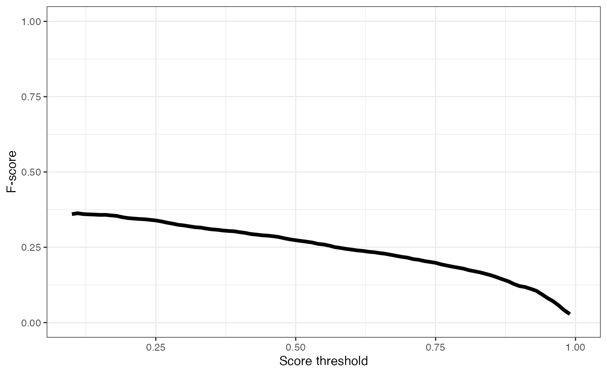
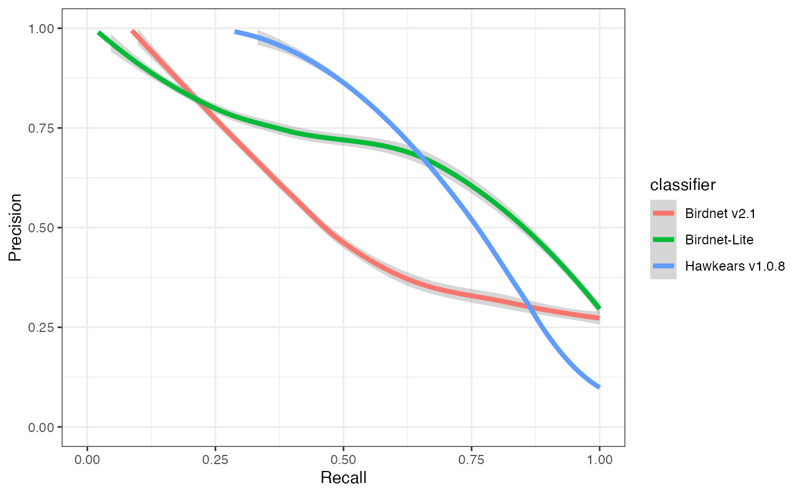
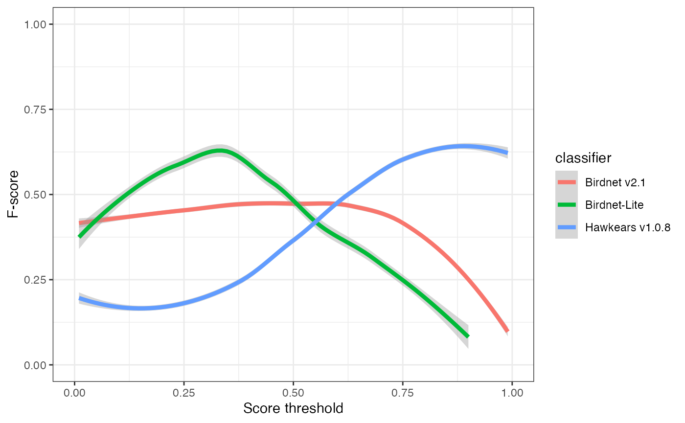
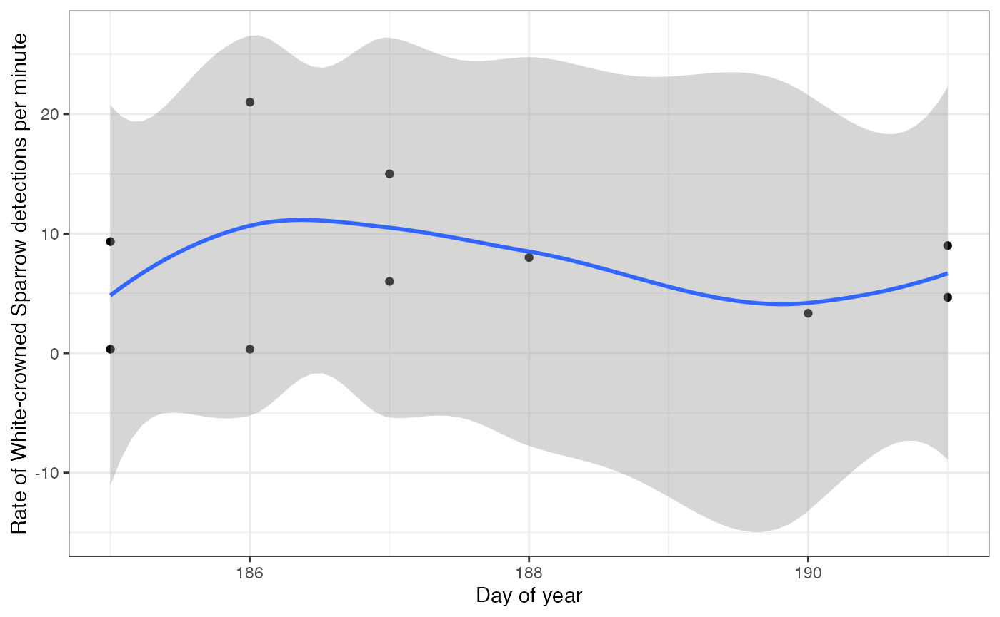

Acoustic classifiers
classifiers-tutorial.RmdDeep learning in acoustic processing
Recent advances in deep learning have led to the development of neural network models that can classify the sounds within acoustic recordings, such as those captured by autonomous recording units (ARUs). These classifiers can be trained to detect just a single focal species, or to classify thousands of species. The process of using automated classifiers to extract species detections from acoustic recordings is collectively called “computer listening”. This tutorial will show you how to access and work with classifier results for recordings in WildTrax.
Classifiers
Classifier scores can be converted to species detections by setting a threshold (e.g., 0.8) above which to consider a species present within a given spectrogram Wood and Kahl (2024). False positives can still occur at high score thresholds, so often verification by a human observer is still necessary.
BirdNET is a deep learning
classifier developed by the Cornell Lab of Ornithology that is trained
to classify more than 6,000 of the world’s most common bird species,
including most North American bird species Kahl
et al. (2021). The model converts audio recordings into windows
of spectrograms and outputs a probability score for each species in each
one. The WildTrax 2.0 release (2025) is accompanied by the introduction
of a new deep learning model, HawkEars (Huus et
al. (2025)), that can classify many of Canada’s most common bird
species. HawkEars is implemented in the same fashion as BirdNET so that
users will also be able to download a report and use the same set of
wildrtrax functions demonstrated above on it. HawkEars is
also freely available from Github. Initial tests of
HawkEars on the same expert dataset as above suggest it performs much
better than BirdNET for Canadian species, with more than double the
recall and higher precision at score thresholds above 50.
Classifier performance
Choosing a score threshold will depend on the goals of the project; however, threshold choice is a trade-off between false positives (i.e., incorrect classifications) and false negatives (i.e., missed detections; see Priyadarshani, Marsland, and Castro (2018), Knight et al. (2017)). Choosing a high score threshold will minimize false positives, but will also result in false negatives. Choosing a low score threshold will minimize false negatives but will result in many false positives. The proportion of false positives at a given score threshold is typically measured by precision:
While the proportion of false negatives is measured as recall:
Where tp is the number of true positives, fp is the number of false positives, and fn is the number of false negatives.
The threshold-agnostic performance of a classifier is then typically evaluated as the area under the curve (AUC) of a precision-recall curve. The corner of the precision recall curve can be used to select a score threshold.
F-score is a combination of precision and recall and can also used to select a score threshold by selecting the peak value.
ABMI has evaluated BirdNET with a dataset of 623 3-minute recordings. All species were annotated in each minute of each recording by our top expert listeners and further groomed for false positives and negatives. The dataset was selected to include at least 10 recordings with detections of the most common 203 Canadian bird species. Recordings were primarily sourced from Alberta and Ontario to include variation in dialect. We evaluated BirdNET by running it using the local eBird occurrence data for each recording and comparing results with our expert dataset and pooling the total detections across species per minute of recording to calculate overall precision, recall, and F-score.
Precision ranged from 0.36 at a score threshold of 0.10 to 0.94 at a score threshold of 0.99 (Figure 1). Recall ranged from 0.01 at a score threshold of 0.99 to 0.36 of 0.1 F-score was similarly low, ranging from 0.03 at a score threshold of 0.01 to 0.36 at a score threshold of 0.99. Neither the precision-recall curve nor the plot of F-score relative to score threshold showed a typical concave down curve shape, suggesting that a low score threshold of 0.10 would be best to optimize trade-offs between precision and recall.


WildTrax uses both BirdNET and HawkEars to automatically classify species in all recordings that are uploaded to the system. The sensitivity for BirdNET is set at 1.5 to reduce the probability of false positives and the score threshold is set low at 0.1 to allow users to set higher thresholds as needed. The list of species is filtered by eBird occurrence data for the week of recording, but not by location.
Evaluating
Use wt_download_report(reports = c('main','ai')) to
download the classifier reports and the main report for further
analysis. We can then combine the main report and the
ai report to evaluate the classifier’s performance on a
given dataset. The wt_evaluate_classifier() function takes
the output from the wt_download_report() and joins them
together and then calculates precision, recall, and F-score for the
requested sequences of thresholds. You can request the metrics at the
minute level for recordings that are processed with the species per
minute method (1SPM). You can also exclude species that are not allowed
in the project from the BirdNET results before evaluation.
Sys.setenv(WT_USERNAME = 'guest', WT_PASSWORD = 'Apple123')
wt_auth()
#This line will take a minute to run while it downloads the data
data <- wt_download_report(project_id = 620,
sensor_id = "ARU",
reports = c("main", "ai"))
eval <- wt_evaluate_classifier(data,
resolution = "task",
remove_species = TRUE,
thresholds = c(0.01, 0.99))
head(eval, 10)## # A tibble: 10 × 5
## precision recall fscore threshold classifier
## <dbl> <dbl> <dbl> <dbl> <chr>
## 1 0.273 1 0.429 0.01 Birdnet v2.1
## 2 0.273 1 0.429 0.02 Birdnet v2.1
## 3 0.273 1 0.429 0.03 Birdnet v2.1
## 4 0.273 1 0.429 0.04 Birdnet v2.1
## 5 0.273 1 0.429 0.05 Birdnet v2.1
## 6 0.273 1 0.429 0.06 Birdnet v2.1
## 7 0.273 1 0.429 0.07 Birdnet v2.1
## 8 0.273 1 0.429 0.08 Birdnet v2.1
## 9 0.273 1 0.429 0.09 Birdnet v2.1
## 10 0.273 1 0.429 0.1 Birdnet v2.1We can plot the results of our evaluation to get an idea of how each classifier is performing:
ggplot(eval) +
geom_smooth(aes(x=threshold, y=precision, colour=classifier), linewidth=1.5) +
xlab("Score threshold") +
ylab("Precision") +
xlim(0,1) +
ylim(0,1) +
theme_bw()
ggplot(eval) +
geom_smooth(aes(x=threshold, y=recall, colour=classifier), linewidth=1.5) +
xlab("Score threshold") +
ylab("Recall") +
xlim(0,1) +
ylim(0,1) +
theme_bw()
ggplot(eval) +
geom_smooth(aes(x=threshold, y=fscore, colour=classifier), linewidth=1.5) +
xlab("Score threshold") +
ylab("F-score") +
xlim(0,1) +
ylim(0,1) +
theme_bw()
ggplot(eval) +
geom_smooth(aes(x=recall, y=precision, colour=classifier), linewidth=1.5) +
xlab("Recall") +
ylab("Precision") +
xlim(0,1) +
ylim(0,1) +
theme_bw()
Selecting and filtering a threshold
You can use the precision and recall values in the output of the
wt_evaluate_classifier() function to select a score
threshold manually, or you can use the
wt_classifier_threshold() function to select the highest
threshold that maximizes F-score.
wt_classifier_threshold(eval)## # A tibble: 3 × 2
## classifier threshold
## <chr> <dbl>
## 1 Birdnet v2.1 0.49
## 2 Birdnet-Lite 0.7
## 3 Hawkears v1.0.8 0.68Once a threshold has been selected, the report can be then be filtered as desired. Whether you’re a human or a computer, all classifiers make mistakes. But we can select a score threshold that maximizes the F-score. Let’s look at what our precision is:
eval[eval$threshold==0.75,]## # A tibble: 3 × 5
## precision recall fscore threshold classifier
## <dbl> <dbl> <dbl> <dbl> <chr>
## 1 0.731 0.322 0.447 0.75 Birdnet v2.1
## 2 0.818 0.191 0.310 0.75 Birdnet-Lite
## 3 0.5 0.749 0.600 0.75 Hawkears v1.0.8At a score threshold of 0.75, the three classifiers exhibit clearly divergent performance profiles. BirdNET v2.1 and BirdNET-Lite achieve relatively high precision (0.73 and 0.82, respectively) but low recall (0.32 and 0.19), indicating that while most detections are correct, a substantial proportion of true events are missed. HawkEars v1.0.8 shows the opposite pattern, with substantially higher recall (0.75) but lower precision (0.50), resulting in the highest overall F-score (0.60). This indicates that HawkEars captures the majority of true events but generates a higher rate of false positives that require subsequent verification. From a detectability standpoint, these results underscore that automated classifiers recover only a subset of the detections identifiable by a human listener, and model outputs, particularly from high-recall configurations, should be interpreted cautiously when applied to ecological analyses.
Check for additional species detected
One of the potential valuable applications of these classifiers is to
check for the presence of additional species in acoustic recordings that
were not detected by human listeners. Ware et al.
(2023) found that supplementing human listener data with verified
computer listening results improved estimates of species richness,
particularly for water-associated birds. We can use the
wt_additional_species() function to check for species
reported by each classifier that the human listeners did not detect in
our project. The input for this function should be the output from the
wt_download_report() function when you request the
main and ai reports and you will need to set a
score threshold.
Let’s use a high threshold (0.8) on our example dataset to see if any new species are detected. We can use the resolution argument to specify whether we want to look for new species in each task, recording, location, or in the entire project. Let’s pretend we’re interested in site-specific species richness and use the task argument.
new <- wt_additional_species(data, remove_species = TRUE, threshold = 0.8, resolution="task")
new## # A tibble: 98 × 14
## location_id recording_id task_id species_common_name confidence organization
## <int> <dbl> <dbl> <chr> <dbl> <chr>
## 1 89970 211641 180880 Belted Kingfisher 0.906 BU
## 2 89970 211641 180880 Chestnut-backed Chi… 0.853 BU
## 3 89970 211641 180880 Dusky Flycatcher 0.961 BU
## 4 89970 211641 180880 Red-winged Blackbird 0.957 BU
## 5 89970 211641 180880 Song Sparrow 0.931 BU
## 6 89970 211641 180880 Townsend's Warbler 0.864 BU
## 7 89970 211643 180882 Northern House Wren 0.884 BU
## 8 89970 211649 180888 Mountain Chickadee 0.803 BU
## 9 89970 211649 180888 Sharp-shinned Hawk 0.856 BU
## 10 89972 211642 180881 Northern House Wren 0.977 BU
## # ℹ 88 more rows
## # ℹ 8 more variables: version <chr>, location <chr>,
## # recording_date_time <dttm>, recording_length <dbl>, scientific_name <chr>,
## # species_code <chr>, ai_detection_time <dbl>,
## # is_species_allowed_in_project <lgl>There are potentially 98 new species detections in our dataset. In this case, you can then format the output of these results to fit with tag sync and either check the tasks individually, or synchronize the tags and check them via species verification.
wt_additional_species(data, remove_species = TRUE, threshold = 0.8, resolution="task", format_to_tags = T)## # A tibble: 98 × 14
## location_id recording_id task_id species_common_name confidence organization
## <int> <dbl> <dbl> <chr> <dbl> <chr>
## 1 89970 211641 180880 Belted Kingfisher 0.906 BU
## 2 89970 211641 180880 Chestnut-backed Chi… 0.853 BU
## 3 89970 211641 180880 Dusky Flycatcher 0.961 BU
## 4 89970 211641 180880 Red-winged Blackbird 0.957 BU
## 5 89970 211641 180880 Song Sparrow 0.931 BU
## 6 89970 211641 180880 Townsend's Warbler 0.864 BU
## 7 89970 211643 180882 Northern House Wren 0.884 BU
## 8 89970 211649 180888 Mountain Chickadee 0.803 BU
## 9 89970 211649 180888 Sharp-shinned Hawk 0.856 BU
## 10 89972 211642 180881 Northern House Wren 0.977 BU
## # ℹ 88 more rows
## # ℹ 8 more variables: version <chr>, location <chr>,
## # recording_date_time <dttm>, recording_length <dbl>, scientific_name <chr>,
## # species_code <chr>, ai_detection_time <dbl>,
## # is_species_allowed_in_project <lgl>
If no human-generated tags exist in a project, in other words you are
only using classifiers to detect species, additional tags can be easily
synchronized with wt_additional_tags(format_to_tags = TRUE)
along with an output folder. If you are adding additional tags to a
human processed data set, the best approach is sync the tags onto new
tasks. Generate tasks with the ‘Not Assigned’ observer and then sync the
output of wt_additional_tags(). The common error you may
encounter are when there are either conflicts for the number of
individuals assigned relative to the task method. .
Individual calls
Another potential use for BirdNET and HawkEars in WildTrax is to use it to detect individual calls as opposed to just the first call in each task (1SPT) or minute (1SPM). This might be of interest if you’re using call rate in a behavioural analysis, or if you’re looking for detections for tool development like distance estimation or building a focal species recognizer. Let’s try it for White-throated Sparrow (WTSP):
#Evaluate classifier performance
eval_wcsp <- wt_evaluate_classifier(data,
resolution = "task",
remove_species = TRUE,
species = "White-crowned Sparrow",
thresholds = c(0.25, 0.99))
#Filter the detections to the best threshold
threshold_wcsp <- wt_classifier_threshold(eval_wcsp)
#Look at performance at that threshold
eval_wcsp[eval_wcsp$threshold==min(threshold_wcsp$threshold),]
#Filter to detections
detections_wcsp <- data[[1]] |>
filter(species_common_name == "White-crowned Sparrow",
confidence > min(threshold_wtsp$threshold))As before, you’ll probably want to upload your detections to WildTrax for verification, even though the classifiers performance for White-throated Sparrow is pretty good. Let’s take a look at our output as call rate to see if it’s higher at the beginning of the season, as we would expect:
#Calculate detections per second and mean confidence in each recording
rate_wcsp <- detections_wcsp |>
group_by(location_id, recording_date_time, recording_length, version) |>
summarise(calls = n(),
confidence = mean(confidence),
.groups = "keep") |>
ungroup() |>
mutate(rate = calls/recording_length*60,
recording_date_time = as.POSIXct(recording_date_time),
yday = as.numeric(format(recording_date_time, "%j")),
hour = as.numeric(format(recording_date_time, "%H")))
#Filter to the sites with most recordings with detections
occupied_wcsp <- rate_wcsp |>
group_by(location_id) |>
mutate(recordings = n()) |>
ungroup() |>
filter(recordings >= 4)
#Plot call rate by day of year
ggplot(occupied_wcsp) +
geom_point(aes(x=yday, y=rate)) +
geom_smooth(aes(x=yday, y=rate)) +
xlab("Day of year") +
ylab("Rate of White-crowned Sparrow detections per minute") +
theme_bw()
Other applications
Visit the BirdNET Github repository and HawkEars repository to run or modify these classifiers on your own computer. The decision to pursue other applications should be made with the effect of a classifier’s low recall rate in mind:
With presence / absence data, a classifier is unlikely to be reliably to confirm absences due to the low recall.
Classifier data can be used for occupancy modelling ((wood_2023?)), and there are approaches that can accommodate false positive error rates to preclude verification of all detections (Rhinehart, Turek, and Kitzes (2022)). However, users should keep in mind that occupancy modelling is recommended only for detection probabilities >30% and that recall from BirdNET may be too low for reliable occupancy estimates for many species (Knight et al. (2017)).
See Pérez-Granados (2023) for a full review of some classifier applications and performance.